Crab SED v6 64748 reselect44 - Scheme R - Double-Rayleigh Poisson-Pooled Background
Scheme R - Double-Rayleigh PSF with Poisson-Pooled Background. v6 chain for v6_64748_nhit100_reselect44_split56_miss030_double_rayleigh_scheme_R_fixed712979_poisson_pooled, reusing the v6_64748_nhit100_highEplus1_split56 nominal inputs and Stage C event reduction. The first Nhit bin is [100,200); >=6 remains a diagnostic tail outside Stage F/G.
Executive Check
| Gate | Status | Evidence |
|---|---|---|
| run id | pass | v6_64748_nhit100_reselect44_split56_miss030_double_rayleigh |
| Nhit binning | pass | [100,200) |
| tail policy | pass | 7 >=6 tail cells, 0 included |
| selector | pass | 44 fit cells; 10 forced in, 5 forced out |
| selector 75/90 swap | pass | cell 75 included=True; cell 90 included=False; total=44 |
| Stage C files | pass | 3,969 processed, missing time 0, entry mismatch 0 |
| Stage E signal | pass | formal sigma 67.608 |
| Stage F fit | pass | preferred logpar |
| Stage G points | pass | 7 Nhit points, 11 predE points |
| fixed containment contract | pass | derived=0.7129790300890827; expected=0.7129790300890827; applications=1; downstream=1.0 |
| metadata pollution | passed | 0 legacy main-input path/token offenders |
Slurm Jobs
All heavy recomputation stages are intended to run through the Slurm dependency chain. This table is populated from PIPELINE_JOB_IDS when available.
| Stage | Job | State | Elapsed | Exit | Name |
|---|---|---|---|---|---|
| manifest | 65246 | COMPLETED | 00:06:49 | 0:0 | v6_64748_poisson_manifest |
| grid | 65247 | COMPLETED | 00:00:39 | 0:0 | v6_64748_poisson_grid |
| bootstrap | 65248 | COMPLETED | 00:10:56 | 0:0 | v6_64748_poisson_bootstrap |
| finalizer | 65249 | FAILED | 00:02:47 | 1:0 | v6_64748_poisson_finalize |
Inputs And Outputs
The main chain uses the 64748 observation eval root and its recovered-time tree. The response, PSF, aperture response, fit, and SED products are all under the new run namespace.
| Field | Value |
|---|---|
| Experiment id | v6_64748_nhit100_reselect44_split56_miss030_double_rayleigh_scheme_R_fixed712979_poisson_pooled |
| Scheme | R - Scheme R - Double-Rayleigh PSF with Poisson-Pooled Background |
| Input commit SHA | 98f2cc6ebe15bd5ff1240340f0bd0374f8d282ea |
| Analysis response | /mnt/mydisk/server/projects/energy_reconstruction/apply/output/stage_e_v6_64748_nhit100_reselect44_split56_miss030_fixed712979_rayleigh_annnorm/response_v6_64748_nhit100_reselect44_split56_miss030_fixed712979_rayleigh.npz |
| Observation root | /mnt/mydisk/WCDA_observation_eval_64748 |
| Recovered time root | /mnt/mydisk/WCDA_observation_eval_64748/recovered_time |
| MC candidate cache | /mnt/mydisk/WCDA_simulation_binned_response_v6_64748_nhit100_highEplus1_split56_candidate |
| Model run dir | /mnt/mydisk/server/projects/energy_reconstruction/runs/theta_recoxy_position_embed_noemax_no_core_cut_64748 |
| Fit selector | ../config/cell_selector_v6_64748_nhit100_reselect44_split56_miss030_fit.csv |
| Stage C input entries | 254,436,994 |
| After configured-cell selection | 113,938,262 |
| Stage | Primary output |
|---|---|
| Prepare/cache | /mnt/mydisk/WCDA_simulation_binned_response_v6_64748_nhit100_highEplus1_split56_candidate |
| Stage A response | apply/output/stage_a_v6_64748_nhit100_highEplus1_split56 (reused) |
| Stage B PSF | apply/output/stage_b_v6_64748_nhit100_reselect44_split56_miss030_double_rayleigh |
| Analysis response | apply/output/stage_e_v6_64748_nhit100_reselect44_split56_miss030_fixed712979_rayleigh_annnorm |
| Stage C observation | apply/output/stage_c_v6_64748_nhit100_highEplus1_split56 (reused) |
| Stage D background | apply/output/stage_d_v6_64748_nhit100_reselect44_split56_miss030_double_rayleigh_annnorm |
| Stage E signal | apply/output/v6_64748_nhit100_reselect44_split56_miss030_double_rayleigh_scheme_R_fixed712979_poisson_pooled/branches/h010_x0_y0/stage_e/runs/stage_e |
| Stage F fit | apply/output/v6_64748_nhit100_reselect44_split56_miss030_double_rayleigh_scheme_R_fixed712979_poisson_pooled/branches/h010_x0_y0/stage_f/runs/stage_f |
| Stage G SED | apply/output/v6_64748_nhit100_reselect44_split56_miss030_double_rayleigh_scheme_R_fixed712979_poisson_pooled/branches/h010_x0_y0/stage_g/runs/stage_g |
Selector Rule
preserve original MC-ridge fit cells; add at most one adjacent higher predE bin per Nhit; apply explicit include/exclude overrides; never include >=6 tail cells in Stage F/G
| Nhit | Status | Candidate | MC count | PSF gate | Reasons |
|---|---|---|---|---|---|
[100,200) | included_highEplus1 | [3.25,3.5) cell 4 | 54,366 | 1 | pass |
[200,300) | included_highEplus1 | [3.75,4.0) cell 19 | 17,909 | 1 | pass |
[300,500) | rejected_highEplus1_probe | [5.5,6) cell 38 | 13,883 | 0 | containment_warning |
[500,800) | diagnostic_tail_only | >=6 cell 52 | 158 | 0 | tail_ge6_excluded_from_main_fit |
[800,1100) | rejected_highEplus1_probe | [5.5,6) cell 64 | 3,211 | 0 | containment_warning |
[1100,2000) | rejected_highEplus1_probe | [4.75,5.0) cell 75 | 2,279 | 0 | valid_events_le_0;effective_events_lt_200;core_fit_effective_events_lt_200;theta_missing_mass_gt_0.3;containment_warning;angle_check_warning |
[2000,3000) | diagnostic_tail_only | >=6 cell 91 | 0 | 0 | tail_ge6_excluded_from_main_fit |
Included highEplus1 cells
| Cell | Nhit | predE | MC count | PSF reason |
|---|---|---|---|---|
| 4 | [100,200) | [3.25,3.5) | 54,366 | pass |
| 19 | [200,300) | [3.75,4.0) | 17,909 | pass |
Rejected highEplus1 probes
| Cell | Nhit | predE | MC count | Reason |
|---|---|---|---|---|
| 38 | [300,500) | [5.5,6) | 13,883 | containment_warning |
| 64 | [800,1100) | [5.5,6) | 3,211 | containment_warning |
Explicit selector overrides
| Action | Cell | Nhit | predE | PSF status |
|---|---|---|---|---|
| include | 5 | [100,200) | [3.5,3.75) | containment_warning |
| include | 6 | [100,200) | [3.75,4.0) | containment_warning |
| include | 20 | [200,300) | [4.0,4.25) | pass |
| include | 21 | [200,300) | [4.25,4.5) | containment_warning |
| include | 34 | [300,500) | [4.25,4.5) | pass |
| include | 47 | [500,800) | [4.25,4.5) | pass |
| include | 48 | [500,800) | [4.5,4.75) | pass |
| include | 61 | [800,1100) | [4.5,4.75) | pass |
| include | 62 | [800,1100) | [4.75,5.0) | pass |
| include | 75 | [1100,2000) | [4.75,5.0) | valid_events_le_0;effective_events_lt_200;core_fit_effective_events_lt_200;theta_missing_mass_gt_0.3;containment_warning;angle_check_warning |
| exclude | 37 | [300,500) | [5,5.5) | containment_warning |
| exclude | 50 | [500,800) | [5,5.5) | containment_warning |
| exclude | 51 | [500,800) | [5.5,6) | containment_warning |
| exclude | 63 | [800,1100) | [5,5.5) | pass |
| exclude | 90 | [2000,3000) | [5.5,6) | valid_events_le_0;effective_events_lt_200;core_fit_effective_events_lt_200;theta_missing_mass_gt_0.3;containment_warning;angle_check_warning |
Four Background And Error Contracts
These rows are distinct scientific contracts. The old pixel-WLS and prerequisite analytic-B_on/WLS rows are read-only R-2R baselines. The Poisson conservative row is the primary new-versus-old comparison. The covariance-aware row is a bootstrap diagnostic and does not replace the conservative preferred fit. R-1R is historical context only and is intentionally absent from this primary table.
| Contract | Background / uncertainty | Valid | phi0 | alpha | beta | chi2/ndof | chi2/ndof value |
|---|---|---|---|---|---|---|---|
| Legacy old R-2R pixel-WLS | weighted-LS annulus surface; pixel-center B_on; legacy conservative errors | True | 2.3121331e-12 | 2.77611 | 0.0594408 | 521.41/41 | 12.717 |
| Analytic-B_on R-2R WLS | weighted-LS annulus surface; analytic circular B_on; legacy conservative errors | True | 2.4265421e-12 | 2.76128 | 0.120183 | 452.57/41 | 11.038 |
| Poisson pooled conservative | positive profiled-Poisson pooled surface; analytic B_on; legacy conservative errors (primary) | True | 2.4359235e-12 | 2.73905 | 0.099757 | 578.4/41 | 14.107 |
| Poisson pooled covariance-aware | same nominal Poisson B_on; full bootstrap excess covariance (diagnostic only) | True | 2.4804590e-12 | 2.7399 | 0.107408 | 802.43/41 | 19.572 |
Frozen Pooling, Model Tier, And CV Evidence
The donor universe is the 84 non-tail cells and the production targets are the frozen 44-cell selector. Pooling remains within Nhit. Continuous annulus counts drive the 20k/10k/100 rules; eight azimuthal folds and pooled leave-one-donor-out scores feed the one-standard-error selection.
| Cell | Continuous annulus N | Tier | Order | Donors | Shape contributor | CV evidence |
|---|---|---|---|---|---|---|
| 1 | 2632650 | independent | 2 | 1 | True | best=2; 1-SE=485.79; failed folds=0 |
| 2 | 3267105 | independent | 2 | 2 | True | best=2; 1-SE=466.8; failed folds=0 |
| 3 | 630670 | independent_plane_cv_fallback | 1 | 3 | True | best=2; 1-SE=475.83; failed folds=0 |
| 4 | 329527 | independent | 2 | 4 | True | best=2; 1-SE=569.47; failed folds=0 |
| 5 | 177726 | independent | 2 | 5 | True | best=2; 1-SE=647.71; failed folds=0 |
| 6 | 82424 | independent | 2 | 6 | True | best=2; 1-SE=801.13; failed folds=0 |
| 15 | 800420 | independent_plane_cv_fallback | 1 | 15 | True | best=2; 1-SE=479.67; failed folds=0 |
| 16 | 405319 | independent_plane_cv_fallback | 1 | 16 | True | best=0; 1-SE=488.76; failed folds=0 |
| 17 | 178946 | independent_plane_cv_fallback | 1 | 17 | True | best=0; 1-SE=484.5; failed folds=0 |
| 18 | 92937 | independent_plane_cv_fallback | 1 | 18 | True | best=2; 1-SE=561.02; failed folds=0 |
| 19 | 53365 | independent | 2 | 19 | True | best=2; 1-SE=618.81; failed folds=0 |
| 20 | 21668 | independent | 2 | 20 | True | best=2; 1-SE=781.11; failed folds=0 |
| 21 | 5323 | shared_plane_fallback | 1 | 20, 21 | True | best=2; 1-SE=2981.6; failed folds=0 |
| 28 | 147174 | independent_plane_cv_fallback | 1 | 28 | True | best=2; 1-SE=484.47; failed folds=0 |
| 29 | 287764 | independent_plane_cv_fallback | 1 | 29 | True | best=2; 1-SE=475.96; failed folds=0 |
| 30 | 222741 | independent_plane_cv_fallback | 1 | 30 | True | best=0; 1-SE=464.36; failed folds=0 |
| 31 | 77343 | independent_plane_cv_fallback | 1 | 31 | True | best=0; 1-SE=489.26; failed folds=0 |
| 32 | 30391 | independent_plane_cv_fallback | 1 | 32 | True | best=2; 1-SE=494.75; failed folds=0 |
| 33 | 17634 | shared_plane_fallback | 1 | 33 | True | best=2; 1-SE=701.15; failed folds=0 |
| 34 | 6000 | shared_plane_fallback | 1 | 33, 34 | True | best=2; 1-SE=3042.2; failed folds=0 |
| 42 | 28390 | independent_plane_cv_fallback | 1 | 42 | True | best=1; 1-SE=469.53; failed folds=0 |
| 43 | 102733 | independent_plane_cv_fallback | 1 | 43 | True | best=1; 1-SE=486.91; failed folds=0 |
| 44 | 88315 | independent_plane_cv_fallback | 1 | 44 | True | best=0; 1-SE=496.73; failed folds=0 |
| 45 | 28862 | independent_plane_cv_fallback | 1 | 45 | True | best=1; 1-SE=478.84; failed folds=0 |
| 46 | 6765 | shared_plane_fallback | 1 | 45, 46 | True | best=2; 1-SE=1990.5; failed folds=0 |
| 47 | 2463 | shared_plane_fallback | 1 | 45, 46, 47, 48 | True | best=1; 1-SE=2985.5; failed folds=0 |
| 48 | 688 | shared_plane_fallback | 1 | 46, 47, 48, 49 | True | best=1; 1-SE=2642.2; failed folds=0 |
| 56 | 4384 | shared_plane_fallback | 1 | 55, 56, 57 | True | best=1; 1-SE=2170.7; failed folds=0 |
| 57 | 23029 | independent_plane_cv_fallback | 1 | 57 | True | best=0; 1-SE=496.25; failed folds=0 |
| 58 | 29285 | independent_plane_cv_fallback | 1 | 58 | True | best=1; 1-SE=486.43; failed folds=0 |
| 59 | 11002 | shared_plane_fallback | 1 | 59 | True | best=1; 1-SE=540.61; failed folds=0 |
| 60 | 1926 | shared_plane_fallback | 1 | 59, 60 | True | best=0; 1-SE=2031.7; failed folds=0 |
| 61 | 354 | shared_plane_fallback | 1 | 59, 60, 61, 62 | True | best=1; 1-SE=2075.4; failed folds=0 |
| 62 | 50 | shared_plane_fallback | 1 | 59, 60, 61, 62, 63 | False | best=1; 1-SE=1962; failed folds=0 |
| 70 | 1366 | shared_plane_fallback | 1 | 69, 70, 71 | True | best=1; 1-SE=1818.3; failed folds=0 |
| 71 | 9580 | shared_plane_fallback | 1 | 70, 71 | True | best=1; 1-SE=1889.9; failed folds=0 |
| 72 | 15534 | shared_plane_fallback | 1 | 72 | True | best=0; 1-SE=519.94; failed folds=0 |
| 73 | 9401 | shared_plane_fallback | 1 | 72, 73 | True | best=1; 1-SE=2063.6; failed folds=0 |
| 74 | 3049 | shared_plane_fallback | 1 | 73, 74 | True | best=1; 1-SE=2101.9; failed folds=0 |
| 75 | 1324 | shared_plane_fallback | 1 | 73, 74, 75, 76 | True | best=1; 1-SE=2854.4; failed folds=0 |
| 86 | 441 | shared_plane_fallback | 1 | 79, 80, 81, 82, 83, 84, 85, 86, 87, 88, 89, 90 | True | best=1; 1-SE=1967.9; failed folds=0 |
| 87 | 1644 | shared_plane_fallback | 1 | 79, 80, 81, 82, 83, 84, 85, 86, 87, 88, 89, 90 | True | best=1; 1-SE=1967.9; failed folds=0 |
| 88 | 3398 | shared_plane_fallback | 1 | 79, 80, 81, 82, 83, 84, 85, 86, 87, 88, 89, 90 | True | best=1; 1-SE=1967.9; failed folds=0 |
| 89 | 4030 | shared_plane_fallback | 1 | 79, 80, 81, 82, 83, 84, 85, 86, 87, 88, 89, 90 | True | best=1; 1-SE=1967.9; failed folds=0 |
All 84 non-tail donor continuous annulus counts
| Donor cell | Continuous annulus N |
|---|---|
| 1 | 2632650 |
| 2 | 3267105 |
| 3 | 630670 |
| 4 | 329527 |
| 5 | 177726 |
| 6 | 82424 |
| 7 | 22670 |
| 8 | 8336 |
| 9 | 3241 |
| 10 | 1548 |
| 11 | 1243 |
| 12 | 399 |
| 14 | 56711 |
| 15 | 800420 |
| 16 | 405319 |
| 17 | 178946 |
| 18 | 92937 |
| 19 | 53365 |
| 20 | 21668 |
| 21 | 5323 |
| 22 | 1567 |
| 23 | 459 |
| 24 | 251 |
| 25 | 23 |
| 27 | 527 |
| 28 | 147174 |
| 29 | 287764 |
| 30 | 222741 |
| 31 | 77343 |
| 32 | 30391 |
| 33 | 17634 |
| 34 | 6000 |
| 35 | 1411 |
| 36 | 386 |
| 37 | 144 |
| 38 | 21 |
| 40 | 0 |
| 41 | 1648 |
| 42 | 28390 |
| 43 | 102733 |
| 44 | 88315 |
| 45 | 28862 |
| 46 | 6765 |
| 47 | 2463 |
| 48 | 688 |
| 49 | 229 |
| 50 | 71 |
| 51 | 6 |
| 53 | 0 |
| 54 | 3 |
| 55 | 284 |
| 56 | 4384 |
| 57 | 23029 |
| 58 | 29285 |
| 59 | 11002 |
| 60 | 1926 |
| 61 | 354 |
| 62 | 50 |
| 63 | 14 |
| 64 | 0 |
| 66 | 0 |
| 67 | 0 |
| 68 | 1 |
| 69 | 58 |
| 70 | 1366 |
| 71 | 9580 |
| 72 | 15534 |
| 73 | 9401 |
| 74 | 3049 |
| 75 | 1324 |
| 76 | 580 |
| 77 | 16 |
| 79 | 0 |
| 80 | 0 |
| 81 | 0 |
| 82 | 0 |
| 83 | 0 |
| 84 | 0 |
| 85 | 55 |
| 86 | 441 |
| 87 | 1644 |
| 88 | 3398 |
| 89 | 4030 |
| 90 | 348 |
Exact positive minima
Every fitted intensity surface must have a strictly positive exact minimum over rho < 6 deg; no clipping is permitted.
| Cell | Surface order | Positive minimum |
|---|---|---|
| 1 | 2 | 0.70435073 |
| 2 | 2 | 0.85138273 |
| 3 | 1 | 0.98985417 |
| 4 | 2 | 0.78639315 |
| 5 | 2 | 0.60607464 |
| 6 | 2 | 0.43628883 |
| 7 | 2 | 0.43628883 |
| 8 | 2 | 0.43628883 |
| 9 | 2 | 0.43628883 |
| 10 | 2 | 0.43628883 |
| 11 | 2 | 0.43628883 |
| 12 | 2 | 0.43628883 |
| 14 | 1 | 0.87838962 |
| 15 | 1 | 0.87838962 |
| 16 | 1 | 0.99093324 |
| 17 | 1 | 0.96622118 |
| 18 | 1 | 0.98598314 |
| 19 | 2 | 0.67877922 |
| 20 | 2 | 0.4756735 |
| 21 | 1 | 0.96734134 |
| 22 | 1 | 0.96734134 |
| 23 | 1 | 0.96734134 |
| 24 | 1 | 0.96734134 |
| 25 | 1 | 0.96734134 |
| 27 | 1 | 0.79526817 |
| 28 | 1 | 0.79526817 |
| 29 | 1 | 0.91280463 |
| 30 | 1 | 0.97905916 |
| 31 | 1 | 0.95686052 |
| 32 | 1 | 0.97902228 |
| 33 | 1 | 0.96360397 |
| 34 | 1 | 0.93675127 |
| 35 | 1 | 0.93675127 |
| 36 | 1 | 0.93675127 |
| 37 | 1 | 0.93675127 |
| 38 | 1 | 0.93675127 |
| 40 | 1 | 0.79967047 |
| 41 | 1 | 0.79967047 |
| 42 | 1 | 0.79967047 |
| 43 | 1 | 0.9160252 |
| 44 | 1 | 0.99126562 |
| 45 | 1 | 0.93522181 |
| 46 | 1 | 0.93022551 |
| 47 | 1 | 0.92683244 |
| 48 | 1 | 0.88838754 |
| 49 | 1 | 0.88838754 |
| 50 | 1 | 0.88838754 |
| 51 | 1 | 0.88838754 |
| 53 | 1 | 0.85729255 |
| 54 | 1 | 0.85729255 |
| 55 | 1 | 0.85729255 |
| 56 | 1 | 0.85729255 |
| 57 | 1 | 0.86434543 |
| 58 | 1 | 0.98007291 |
| 59 | 1 | 0.92639942 |
| 60 | 1 | 0.94133798 |
| 61 | 1 | 0.9368087 |
| 62 | 1 | 0.9368087 |
| 63 | 1 | 0.9368087 |
| 64 | 1 | 0.9368087 |
| 66 | 1 | 0.84065032 |
| 67 | 1 | 0.84065032 |
| 68 | 1 | 0.84065032 |
| 69 | 1 | 0.84065032 |
| 70 | 1 | 0.84065032 |
| 71 | 1 | 0.84065032 |
| 72 | 1 | 0.93078891 |
| 73 | 1 | 0.92919804 |
| 74 | 1 | 0.91879172 |
| 75 | 1 | 0.92641417 |
| 76 | 1 | 0.92641417 |
| 77 | 1 | 0.92641417 |
| 79 | 1 | 0.86467058 |
| 80 | 1 | 0.86467058 |
| 81 | 1 | 0.86467058 |
| 82 | 1 | 0.86467058 |
| 83 | 1 | 0.86467058 |
| 84 | 1 | 0.86467058 |
| 85 | 1 | 0.86467058 |
| 86 | 1 | 0.86467058 |
| 87 | 1 | 0.86467058 |
| 88 | 1 | 0.86467058 |
| 89 | 1 | 0.86467058 |
| 90 | 1 | 0.86467058 |
12 Branch Envelope
h010_x0_y0 (0.1 deg, zero phase). Every failed and passed registered gate is retained below. Failure is evidence, not a reason to suppress this report or substitute another branch. Failed gates: background_all_cells_half_sigma, background_cells_quarter_sigma_coverage, pull_stability| Branch | phi0 | alpha | beta | Mahalanobis | max delta B/sigma | max delta pull |
|---|---|---|---|---|---|---|
h005_x0_y0 | 2.4367011e-12 | 2.73894 | 0.0998634 | 0.021434 | 0.49038 | 0.48453 |
h005_xh_y0 | 2.4376014e-12 | 2.73932 | 0.100561 | 0.070993 | 0.46261 | 0.45655 |
h005_x0_yh | 2.4369775e-12 | 2.73879 | 0.100211 | 0.066032 | 0.4178 | 0.41271 |
h005_xh_yh | 2.4373213e-12 | 2.73907 | 0.100215 | 0.046889 | 0.42074 | 0.41565 |
h010_x0_y0 | 2.4359235e-12 | 2.73905 | 0.099757 | 0 | 0 | 0 |
h010_xh_y0 | 2.4361472e-12 | 2.7392 | 0.0997034 | 0.026709 | 0.37519 | 0.3707 |
h010_x0_yh | 2.4376638e-12 | 2.73897 | 0.100555 | 0.090455 | 0.63945 | 0.63666 |
h010_xh_yh | 2.4381762e-12 | 2.73885 | 0.100448 | 0.083647 | 0.69691 | 0.69286 |
h020_x0_y0 | 2.4358703e-12 | 2.73854 | 0.0996209 | 0.030664 | 0.49854 | 0.49594 |
h020_xh_y0 | 2.4368825e-12 | 2.73866 | 0.0992824 | 0.073264 | 0.67788 | 0.67234 |
h020_x0_yh | 2.4385713e-12 | 2.73892 | 0.100993 | 0.14176 | 0.62703 | 0.62472 |
h020_xh_yh | 2.4374731e-12 | 2.73875 | 0.100153 | 0.059528 | 0.78605 | 0.78205 |
Per-cell B_on, phase, and pull envelopes
| Cell | Nominal B_on | B_on envelope / sigma | Phase RMS / sigma | Nominal pull | Pull envelope |
|---|---|---|---|---|---|
| 1 | 1.5678394e+05 | 0.22966 | 0.11011 | -3.6504 | 0.15677 |
| 2 | 1.5015392e+05 | 0.21507 | 0.12708 | 1.1023 | 0.18924 |
| 3 | 29930.11 | 1.45536e-14 | 0 | 3.3651 | 0.0071238 |
| 4 | 24715.42 | 0.40252 | 0.15906 | -1.2775 | 0.40138 |
| 5 | 22135.45 | 0.69691 | 0.2825 | -2.6354 | 0.69286 |
| 6 | 18343.17 | 0.49038 | 0.14692 | -4.2844 | 0.48453 |
| 15 | 19440.83 | 1.72552e-14 | 0 | -1.8454 | 0.068288 |
| 16 | 9263.313 | 0 | 0 | 5.9963 | 0.010755 |
| 17 | 5102.347 | 0 | 0 | 4.9894 | 0.0040387 |
| 18 | 5928.988 | 0 | 0 | 1.7867 | 0.0019023 |
| 19 | 5731.739 | 0.37854 | 0.24962 | -2.0045 | 0.37383 |
| 20 | 4214.156 | 0.78605 | 0.26584 | -1.6694 | 0.78205 |
| 21 | 1686.627 | 0 | 0 | 12.236 | 0.0019211 |
| 28 | 2340.119 | 0 | 0 | -4.1815 | 0.041204 |
| 29 | 4196.799 | 8.15312e-15 | 0 | 4.0637 | 0.016757 |
| 30 | 2917.372 | 0 | 0 | 4.4802 | 0.012619 |
| 31 | 1120.26 | 0 | 0 | 0.056192 | 0.0077607 |
| 32 | 1810.41 | 7.20334e-15 | 0 | 2.6688 | 0.002986 |
| 33 | 1684.908 | 0 | 0 | 3.3106 | 0.0028381 |
| 34 | 764.3513 | 0 | 0 | 6.0523 | 0.0033225 |
| 42 | 221.3866 | 9.81585e-16 | 0 | -2.9578 | 0.0073203 |
| 43 | 845.9887 | 1.95317e-15 | 0 | 0.095344 | 0.019683 |
| 44 | 689.131 | 2.13739e-15 | 0 | -0.91575 | 0.025118 |
| 45 | 240.3738 | 1.86359e-15 | 0 | 0.43534 | 0.010694 |
| 46 | 222.6552 | 2.34887e-15 | 0 | 2.6121 | 0.004549 |
| 47 | 251.2573 | 1.21162e-15 | 0 | 0.9973 | 0.0029727 |
| 48 | 74.93618 | 1.04782e-15 | 0 | 1.7378 | 0.0045375 |
| 56 | 24.58468 | 2.93438e-16 | 0 | -2.7942 | 0.010439 |
| 57 | 119.2067 | 5.55176e-16 | 0 | -3.3492 | 0.018847 |
| 58 | 161.191 | 0 | 0 | -0.52304 | 0.013997 |
| 59 | 64.67417 | 0 | 0 | 1.4625 | 0.010109 |
| 60 | 19.74909 | 0 | 0 | 3.8296 | 0.0036341 |
| 61 | 32.79701 | 0 | 0 | -0.065782 | 0.0018197 |
| 62 | 6.560725 | 0 | 0 | 1.0641 | 0.0021211 |
| 70 | 5.725162 | 0 | 0 | -9.0947 | 0.01001 |
| 71 | 35.5068 | 4.34433e-16 | 0 | -3.7504 | 0.01626 |
| 72 | 60.46606 | 6.89761e-16 | 0 | 0.98516 | 0.021635 |
| 73 | 37.59235 | 4.64901e-16 | 0 | 3.471 | 0.016487 |
| 74 | 13.28563 | 0 | 0 | 4.4225 | 0.009263 |
| 75 | 183.6241 | 0 | 0 | 1.8594 | 6.75771e-04 |
| 86 | 1.092149 | 0 | 0 | 0.86583 | 0.0093864 |
| 87 | 5.109418 | 1.84759e-16 | 0 | 0.15566 | 0.016202 |
| 88 | 14.07749 | 6.17723e-16 | 0 | -0.40758 | 0.012242 |
| 89 | 22.87383 | 0 | 0 | 1.1058 | 0.0028077 |
| Registered gate | Status | Observed | Limit |
|---|---|---|---|
| registered_branch_ids | PASSED | ["h005_x0_y0","h005_xh_y0","h005_x0_yh","h005_xh_yh","h010_x0_y0","h010_xh_y0","h010_x0_yh","h010_xh_yh","h020_x0_y0","h020_xh_y0","h020_x0_yh","h020_xh_yh"] | {"count":12,"exact_ids":["h005_x0_y0","h005_xh_y0","h005_x0_yh","h005_xh_yh","h010_x0_y0","h010_xh_y0","h010_x0_yh","h010_xh_yh","h020_x0_y0","h020_xh_y0","h020_x0_yh","h020_xh_yh"]} |
| shared_provenance_identical | PASSED | {"analytic_bon_baseline_sha":["527af0380b1cf44de4a0c20d642174e210ca9485"],"code_sha":["98f2cc6ebe15bd5ff1240340f0bd0374f8d282ea"],"pooling_manifest_sha256":["6f03ac649a41e8538b05a8886d1911b3e0990dc279f953459a418630145d1b47"],"psf_sha256":["aba172f327aa324cd1a2edff72d1e179ee9e9e2922b417b345c9244f81c6de24"],"response_sha256":["3793aae2357e8a83d61a9ee907d362cf06e9e379b522cee99599b50a83406c56"],"selector_sha256":["c85c3b03839ee6b4d3321bbaa87a0dc171a5f8427c4ed7ff298fbc19f295b4f6"],"stage_c_sha256":["06a9bb3d0ba404d1aaa35c072fdbbc0d065b2d05d9e32c7b738c0170f61c4118"]} | {"distinct_values_per_key":1,"required_keys":["pooling_manifest_sha256","selector_sha256","psf_sha256","stage_c_sha256","response_sha256","analytic_bon_baseline_sha","code_sha"]} |
| artifact_provenance_verified | PASSED | 0 | {"operator":"==","value":0} |
| background_all_cells_half_sigma | FAILED | 0.786048277993276 | {"operator":"<=","value":0.5} |
| background_cells_quarter_sigma_coverage | FAILED | 0.8863636363636364 | {"operator":">=","per_cell_limit":0.25,"value":0.9} |
| phase_rms_all_cells_half_sigma | PASSED | 0.28250404418308556 | {"operator":"<=","value":0.5} |
| phase_rms_cells_quarter_sigma_coverage | PASSED | 0.9545454545454546 | {"operator":">=","per_cell_limit":0.25,"value":0.9} |
| fit_parameter_mahalanobis | PASSED | 0.14176220735262363 | {"operator":"<=","value":0.5} |
| beta_stability | PASSED | 0.0012358856737466062 | {"fraction":0.25,"operator":"<=","sigma_beta_nominal":0.014324162442561544,"value":0.003581040610640386} |
| pull_stability | FAILED | 0.782051158119939 | {"operator":"<=","value":0.5} |
| no_pull_five_sigma_migration | PASSED | 0 | {"operator":"==","value":0} |
| all_stage_d_fits_valid | PASSED | 0 | {"operator":"==","value":0} |
| all_stage_d_surfaces_positive | PASSED | 0 | {"operator":"==","value":0} |
| all_stage_f_fits_valid | PASSED | 0 | {"operator":"==","value":0} |
| stage_e_background_matches_stage_d | PASSED | 0 | {"operator":"==","value":0} |
| event_level_n_on_identical | PASSED | 0 | {"operator":"==","value":0} |
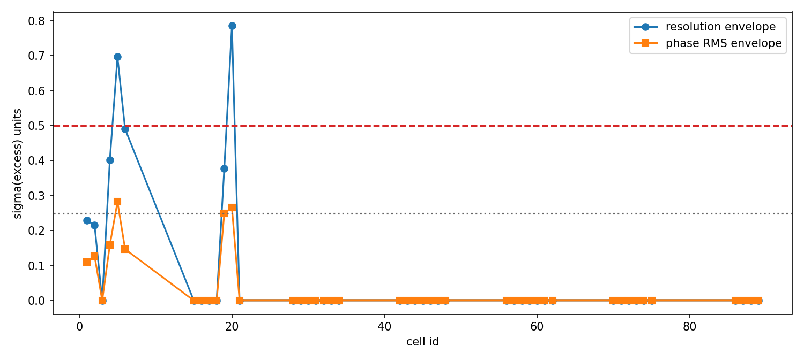
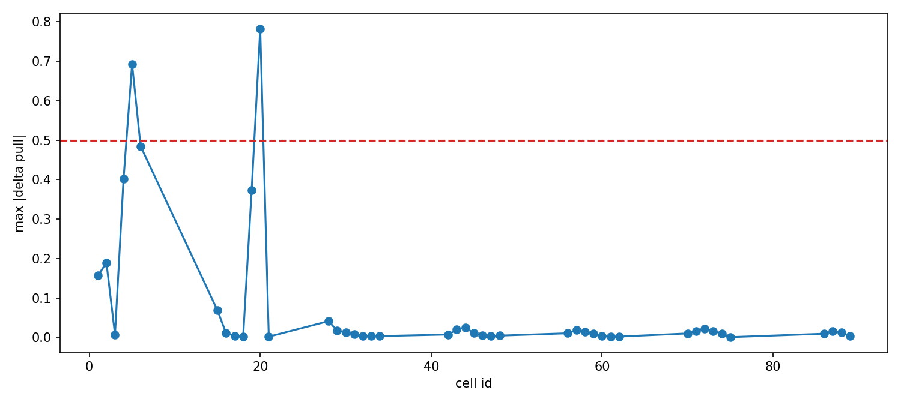
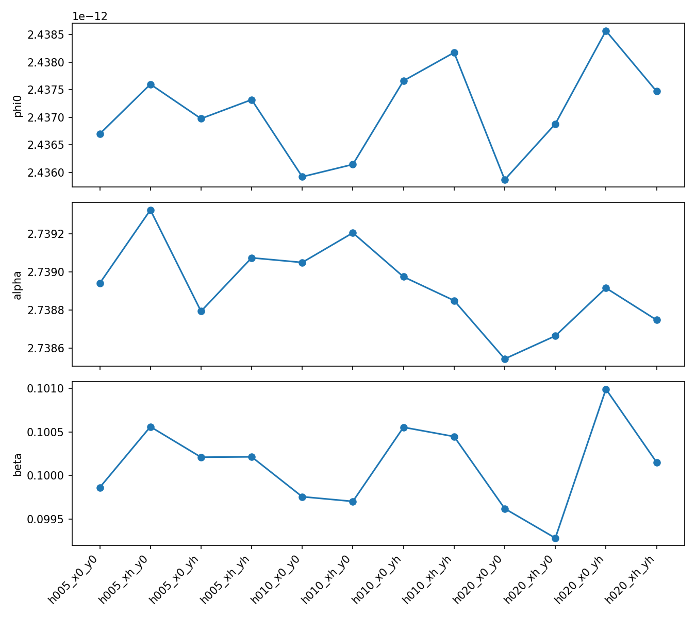
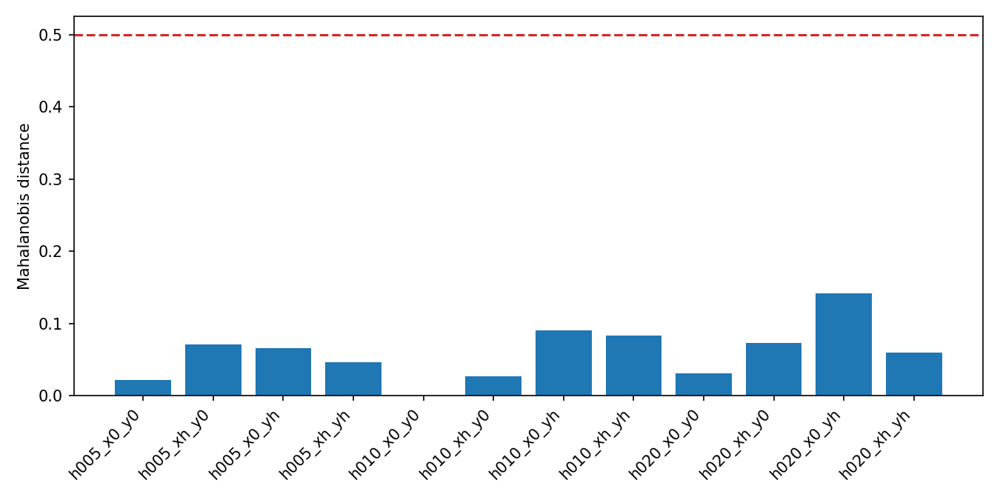
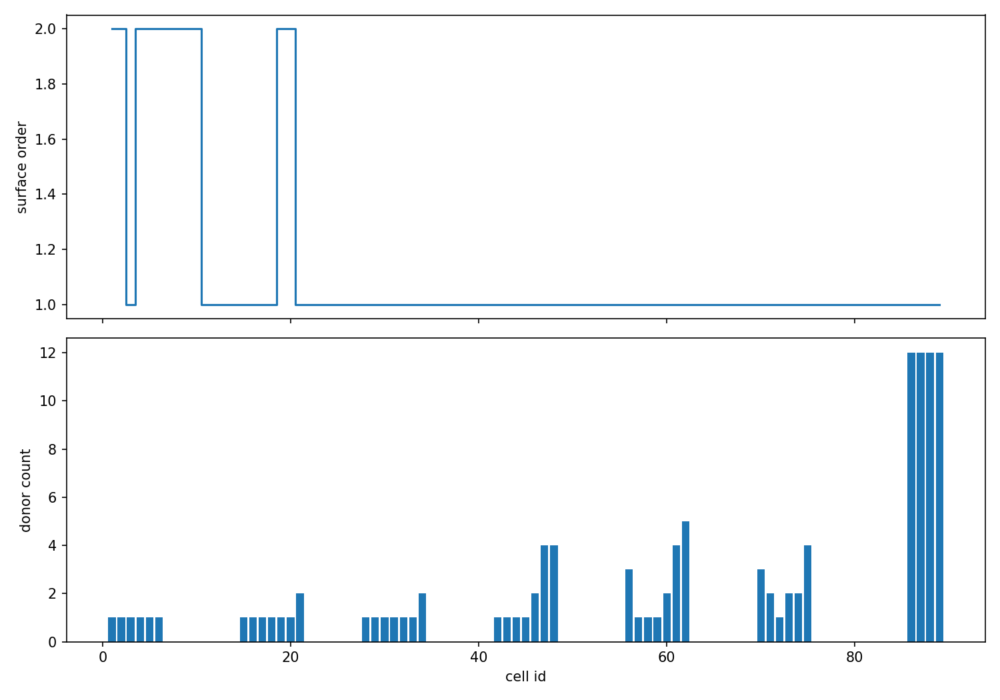
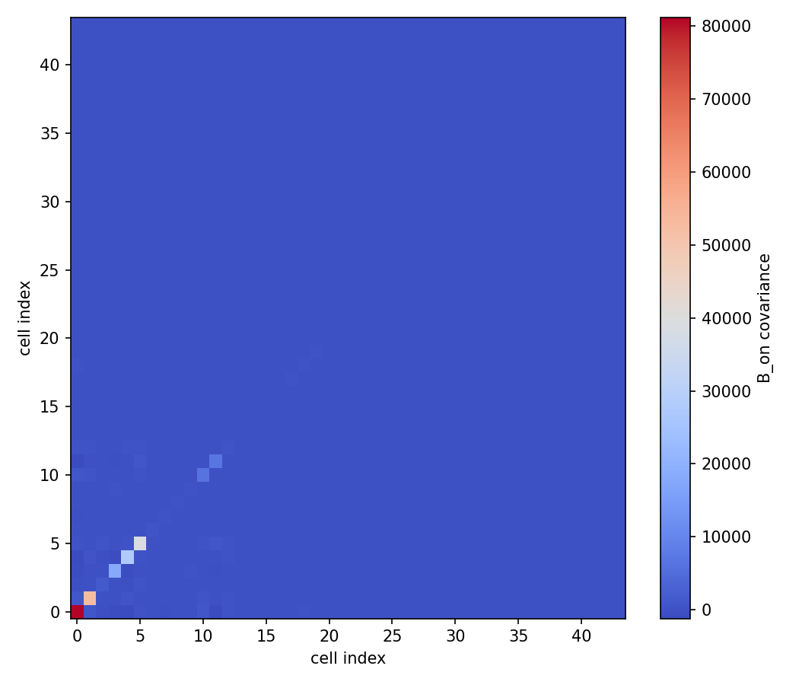
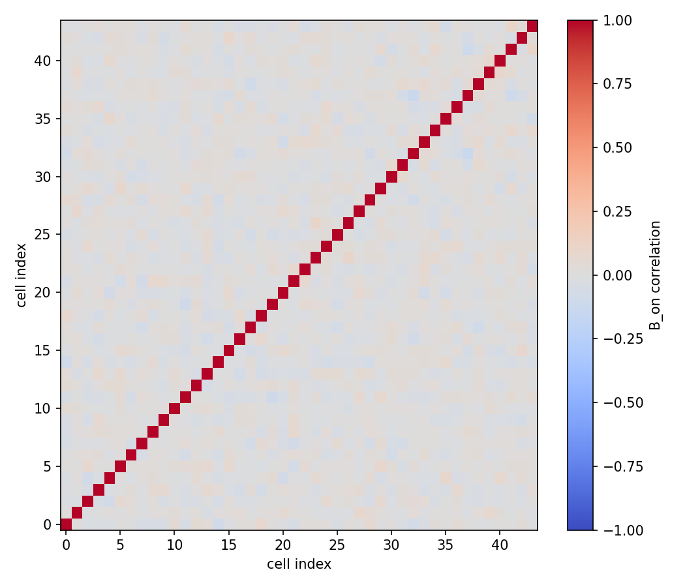
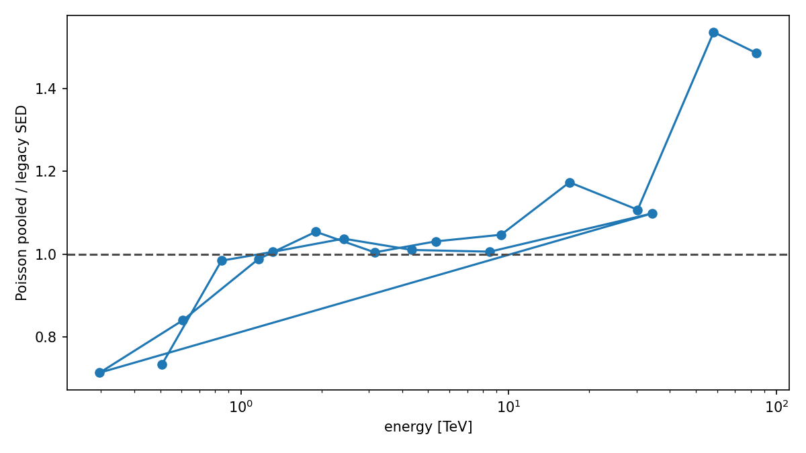
Bootstrap Covariance Evidence
The covariance-aware fit uses diag(N_on) + Cov(B_on) through a Cholesky solve. Its result is diagnostic; the legacy conservative-error Poisson fit remains primary.
| Diagnostic | Evidence |
|---|---|
| Replicates requested / completed | 1000 / 1000 |
| Refit failures | 0 |
| Seed | 64748 |
| Event-level N_on total | 518,803 |
| B_on covariance shape | [44, 44] |
| Bootstrap sample shape | [1000, 44] |
| Minimum excess-covariance eigenvalue | 12.937773 |
| Excess-covariance condition number | 18752.309 |
| Stage D SHA | 7626adb546d6e93f41ff363e58dbe0d7c5f93dcffe656afce61ea390cafd9e02 |
| Stage E SHA | 655f5f0313655b68ecc42a91947d2a60f9edeb2cb93785f40578a4efd3aacdd3 |
| Manifest SHA | 6f03ac649a41e8538b05a8886d1911b3e0990dc279f953459a418630145d1b47 |
Response, Selector, Manifest, And Slurm Provenance
| Artifact | SHA |
|---|---|
| Manifest self hash | 6f03ac649a41e8538b05a8886d1911b3e0990dc279f953459a418630145d1b47 |
| Analytic baseline commit | 527af0380b1cf44de4a0c20d642174e210ca9485 |
| Implementation commit | 98f2cc6ebe15bd5ff1240340f0bd0374f8d282ea |
| manifest_builder | 1d71b353d2ca35cd46428cea0238fed151dc0c7e67c148433b8348391b99cf14 |
| psf_metadata | 85c0039c871e4f2303b7ea973ef9eb3895408d8a9a4acd1f70a8bb4997ab764b |
| psf_npz | aba172f327aa324cd1a2edff72d1e179ee9e9e2922b417b345c9244f81c6de24 |
| selector | c85c3b03839ee6b4d3321bbaa87a0dc171a5f8427c4ed7ff298fbc19f295b4f6 |
| source_table | 80e77541c41962bf09ab8e6ea777def5960144547dc937cb6d68d06a1b0e8709 |
| stage_c_metadata | 06a9bb3d0ba404d1aaa35c072fdbbc0d065b2d05d9e32c7b738c0170f61c4118 |
| stage_c_source_files | e5c9e0dc19b18327f4980eedd0635f3c7773e93cfefc9ace66926ce88643b852 |
| nominal pooling_manifest_sha256 | 6f03ac649a41e8538b05a8886d1911b3e0990dc279f953459a418630145d1b47 |
| nominal selector_sha256 | c85c3b03839ee6b4d3321bbaa87a0dc171a5f8427c4ed7ff298fbc19f295b4f6 |
| nominal psf_sha256 | aba172f327aa324cd1a2edff72d1e179ee9e9e2922b417b345c9244f81c6de24 |
| nominal stage_c_sha256 | 06a9bb3d0ba404d1aaa35c072fdbbc0d065b2d05d9e32c7b738c0170f61c4118 |
| nominal response_sha256 | 3793aae2357e8a83d61a9ee907d362cf06e9e379b522cee99599b50a83406c56 |
| nominal analytic_bon_baseline_sha | 527af0380b1cf44de4a0c20d642174e210ca9485 |
| nominal code_sha | 98f2cc6ebe15bd5ff1240340f0bd0374f8d282ea |
| Role / branch | Job id | State |
|---|---|---|
| manifest | 65246 | COMPLETED |
| bootstrap | 65248 | COMPLETED |
| finalizer | 65249 | FAILED |
| h005_x0_y0 | 65247_0 | COMPLETED |
| h005_xh_y0 | 65247_1 | COMPLETED |
| h005_x0_yh | 65247_2 | COMPLETED |
| h005_xh_yh | 65247_3 | COMPLETED |
| h010_x0_y0 | 65247_4 | COMPLETED |
| h010_xh_y0 | 65247_5 | COMPLETED |
| h010_x0_yh | 65247_6 | COMPLETED |
| h010_xh_yh | 65247_7 | COMPLETED |
| h020_x0_y0 | 65247_8 | COMPLETED |
| h020_xh_y0 | 65247_9 | COMPLETED |
| h020_x0_yh | 65247_10 | COMPLETED |
| h020_xh_yh | 65247_11 | COMPLETED |
Poisson Pooling Provenance
The nominal background is a positive profiled-Poisson intensity fit with frozen same-Nhit pooling. The nominal map sampling remains 0.1 deg; continuous event cuts and analytic annulus/disk integrals define the physical counts.
| Contract | Evidence |
|---|---|
| Manifest self hash | 6f03ac649a41e8538b05a8886d1911b3e0990dc279f953459a418630145d1b47 |
| Analytic B_on baseline SHA | 527af0380b1cf44de4a0c20d642174e210ca9485 |
| Implementation SHA | 98f2cc6ebe15bd5ff1240340f0bd0374f8d282ea |
| Target / donor cells | 44 / 84 |
| Model tiers | independent: 7, independent_plane_cv_fallback: 16, shared_plane_fallback: 21 |
| Polynomial orders | order 1: 37, order 2: 7 |
| Continuous annulus counts | min 0; max 3,267,105 |
| Input | SHA256 | Path |
|---|---|---|
| manifest_builder | 1d71b353d2ca35cd46428cea0238fed151dc0c7e67c148433b8348391b99cf14 | /mnt/mydisk/server/projects/energy_reconstruction/apply/tools/build_v6_poisson_pooling_manifest.py |
| psf_metadata | 85c0039c871e4f2303b7ea973ef9eb3895408d8a9a4acd1f70a8bb4997ab764b | /mnt/mydisk/server/projects/energy_reconstruction/apply/output/stage_b_v6_64748_nhit100_reselect44_split56_miss030_double_rayleigh/runs/v6_64748_nhit100_reselect44_split56_miss030_double_rayleigh_stage_b_psf/psf_v6_64748_nhit100_reselect44_split56_miss030_double_rayleigh_metadata.json |
| psf_npz | aba172f327aa324cd1a2edff72d1e179ee9e9e2922b417b345c9244f81c6de24 | /mnt/mydisk/server/projects/energy_reconstruction/apply/output/stage_b_v6_64748_nhit100_reselect44_split56_miss030_double_rayleigh/runs/v6_64748_nhit100_reselect44_split56_miss030_double_rayleigh_stage_b_psf/psf_v6_64748_nhit100_reselect44_split56_miss030_double_rayleigh.npz |
| selector | c85c3b03839ee6b4d3321bbaa87a0dc171a5f8427c4ed7ff298fbc19f295b4f6 | /mnt/mydisk/server/projects/energy_reconstruction/apply/config/cell_selector_v6_64748_nhit100_reselect44_split56_miss030_fit.csv |
| source_table | 80e77541c41962bf09ab8e6ea777def5960144547dc937cb6d68d06a1b0e8709 | /mnt/mydisk/server/projects/energy_reconstruction/apply/config/cell_ledger_v6_64748_nhit100_highEplus1_split56_candidate.csv |
| stage_c_metadata | 06a9bb3d0ba404d1aaa35c072fdbbc0d065b2d05d9e32c7b738c0170f61c4118 | /mnt/mydisk/server/projects/energy_reconstruction/apply/output/stage_c_v6_64748_nhit100_highEplus1_split56/runs/v6_64748_nhit100_highEplus1_split56_stage_c_halfyear/obs_events_metadata.json |
| stage_c_source_files | e5c9e0dc19b18327f4980eedd0635f3c7773e93cfefc9ace66926ce88643b852 | /mnt/mydisk/server/projects/energy_reconstruction/apply/output/stage_c_v6_64748_nhit100_highEplus1_split56/runs/v6_64748_nhit100_highEplus1_split56_stage_c_halfyear/source_files.csv |
Smallest recorded fitted-surface minimum: 0.4362888. No clipping is part of this contract.
Poisson Grid Convergence
| Gate | Status | Observed | Limit |
|---|---|---|---|
| registered_branch_ids | PASSED | ["h005_x0_y0","h005_xh_y0","h005_x0_yh","h005_xh_yh","h010_x0_y0","h010_xh_y0","h010_x0_yh","h010_xh_yh","h020_x0_y0","h020_xh_y0","h020_x0_yh","h020_xh_yh"] | {"count":12,"exact_ids":["h005_x0_y0","h005_xh_y0","h005_x0_yh","h005_xh_yh","h010_x0_y0","h010_xh_y0","h010_x0_yh","h010_xh_yh","h020_x0_y0","h020_xh_y0","h020_x0_yh","h020_xh_yh"]} |
| shared_provenance_identical | PASSED | {"analytic_bon_baseline_sha":["527af0380b1cf44de4a0c20d642174e210ca9485"],"code_sha":["98f2cc6ebe15bd5ff1240340f0bd0374f8d282ea"],"pooling_manifest_sha256":["6f03ac649a41e8538b05a8886d1911b3e0990dc279f953459a418630145d1b47"],"psf_sha256":["aba172f327aa324cd1a2edff72d1e179ee9e9e2922b417b345c9244f81c6de24"],"response_sha256":["3793aae2357e8a83d61a9ee907d362cf06e9e379b522cee99599b50a83406c56"],"selector_sha256":["c85c3b03839ee6b4d3321bbaa87a0dc171a5f8427c4ed7ff298fbc19f295b4f6"],"stage_c_sha256":["06a9bb3d0ba404d1aaa35c072fdbbc0d065b2d05d9e32c7b738c0170f61c4118"]} | {"distinct_values_per_key":1,"required_keys":["pooling_manifest_sha256","selector_sha256","psf_sha256","stage_c_sha256","response_sha256","analytic_bon_baseline_sha","code_sha"]} |
| artifact_provenance_verified | PASSED | 0 | {"operator":"==","value":0} |
| background_all_cells_half_sigma | FAILED | 0.786048277993276 | {"operator":"<=","value":0.5} |
| background_cells_quarter_sigma_coverage | FAILED | 0.8863636363636364 | {"operator":">=","per_cell_limit":0.25,"value":0.9} |
| phase_rms_all_cells_half_sigma | PASSED | 0.28250404418308556 | {"operator":"<=","value":0.5} |
| phase_rms_cells_quarter_sigma_coverage | PASSED | 0.9545454545454546 | {"operator":">=","per_cell_limit":0.25,"value":0.9} |
| fit_parameter_mahalanobis | PASSED | 0.14176220735262363 | {"operator":"<=","value":0.5} |
| beta_stability | PASSED | 0.0012358856737466062 | {"fraction":0.25,"operator":"<=","sigma_beta_nominal":0.014324162442561544,"value":0.003581040610640386} |
| pull_stability | FAILED | 0.782051158119939 | {"operator":"<=","value":0.5} |
| no_pull_five_sigma_migration | PASSED | 0 | {"operator":"==","value":0} |
| all_stage_d_fits_valid | PASSED | 0 | {"operator":"==","value":0} |
| all_stage_d_surfaces_positive | PASSED | 0 | {"operator":"==","value":0} |
| all_stage_f_fits_valid | PASSED | 0 | {"operator":"==","value":0} |
| stage_e_background_matches_stage_d | PASSED | 0 | {"operator":"==","value":0} |
| event_level_n_on_identical | PASSED | 0 | {"operator":"==","value":0} |
| Role / branch | Slurm job | State |
|---|---|---|
| manifest | 65246 | COMPLETED |
| bootstrap | 65248 | COMPLETED |
| finalizer | 65249 | FAILED |
| h005_x0_y0 | 65247_0 | COMPLETED |
| h005_xh_y0 | 65247_1 | COMPLETED |
| h005_x0_yh | 65247_2 | COMPLETED |
| h005_xh_yh | 65247_3 | COMPLETED |
| h010_x0_y0 | 65247_4 | COMPLETED |
| h010_xh_y0 | 65247_5 | COMPLETED |
| h010_x0_yh | 65247_6 | COMPLETED |
| h010_xh_yh | 65247_7 | COMPLETED |
| h020_x0_y0 | 65247_8 | COMPLETED |
| h020_xh_y0 | 65247_9 | COMPLETED |
| h020_x0_yh | 65247_10 | COMPLETED |
| h020_xh_yh | 65247_11 | COMPLETED |
Poisson Background Covariance
The legacy conservative-error LogPar fit remains the primary result. The full bootstrap background covariance is a separately named diagnostic and cannot change preferred_fit.
| Diagnostic | Value |
|---|---|
| Bootstrap samples | 1,000 |
| B_on covariance shape | [44, 44] |
| Excess covariance shape | [44, 44] |
| Minimum excess eigenvalue | 12.93777 |
| Condition number | 18752.31 |
| Completed / failures | 1,000 / 0 |
Stage C Time Audit
Stage C used /mnt/mydisk/WCDA_observation_eval_64748/recovered_time. Missing-time and entry-mismatch rows are listed below when present.
| Metric | Value |
|---|---|
| Processed files | 3,969 |
| Missing time files | 0 |
| Entry mismatch files | 0 |
| Selected rows | 113,938,262 |
| Matched MJD min | 59579.667 |
| Matched MJD max | 59760.652 |
Stage A-B-D-E Diagnostics
Stage A nominal response is primary_thrown_response; Stage F/G use primary_thrown_response under Scheme R - Double-Rayleigh PSF with Poisson-Pooled Background. Stage B wrote 91 formal PSF rows. Shared Stage B and Stage D figures are scheme-independent inputs copied into this report's asset directory. Figure labels use display IDs 1-84 after excluding the predE >= 6 tail column from numbering; stored data and metadata retain the original 91-cell internal IDs. The theta grid shows each cell's raw mc_weight-normalized distribution before Crab reweighting; orange shading marks Crab-positive theta bins without MC support. In the radial grid, purple profiles and dashed Rayleigh curves are diagnostic-only fits made without the formal true-energy cut when the formal profile is empty; they do not replace the Stage B PSF used by Stage A/F. Panels with no raw MC events are labeled explicitly. Pale green panels mark the 44 cells used by Stage F/G.
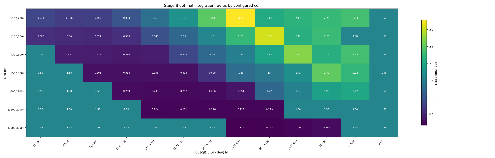
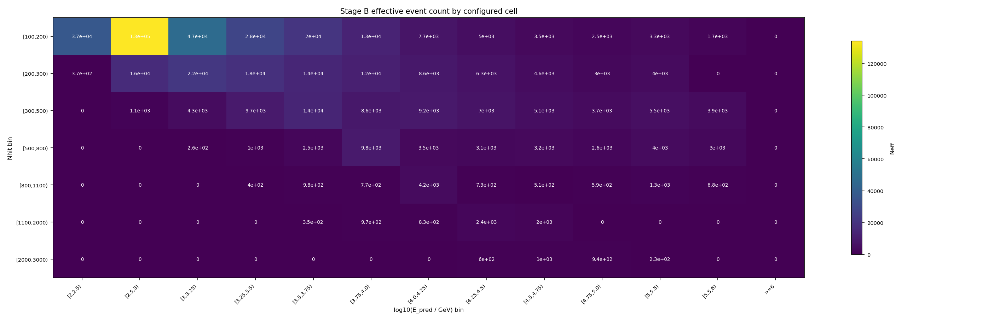


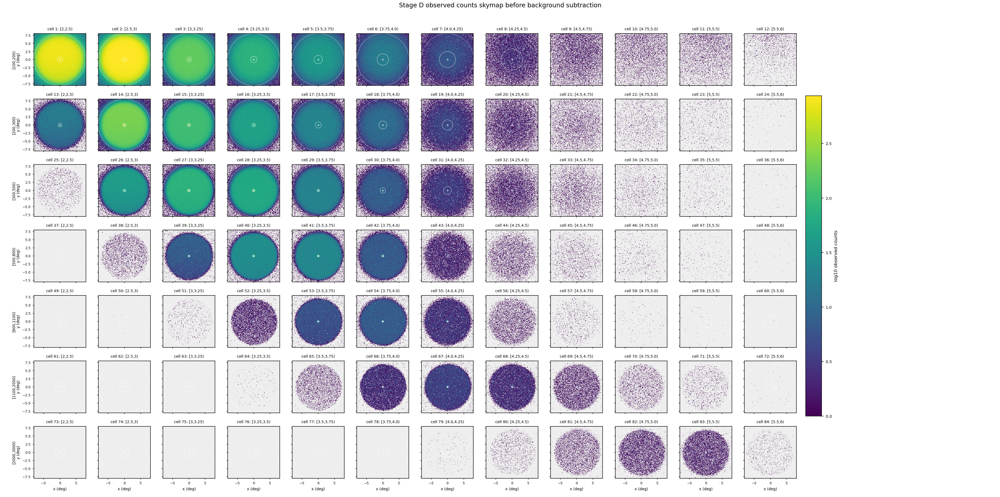
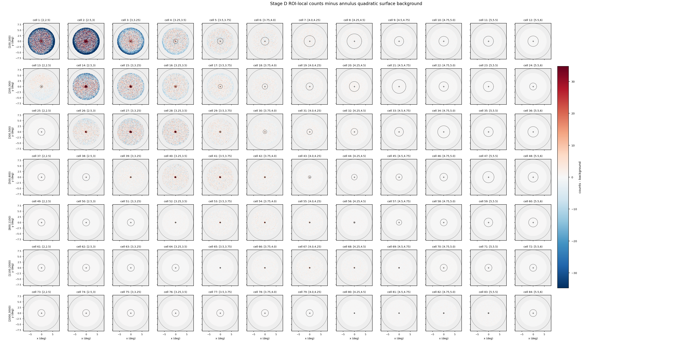
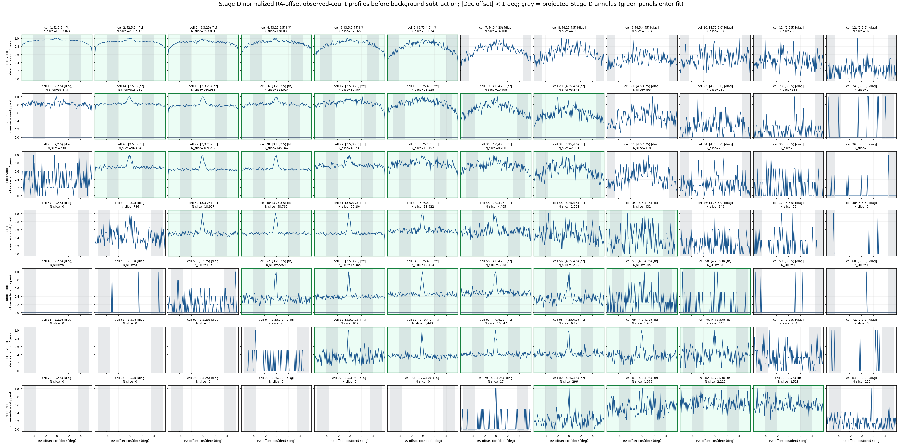
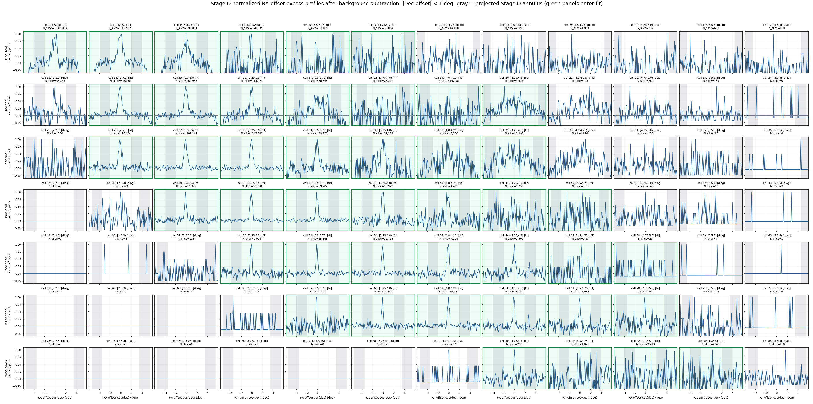
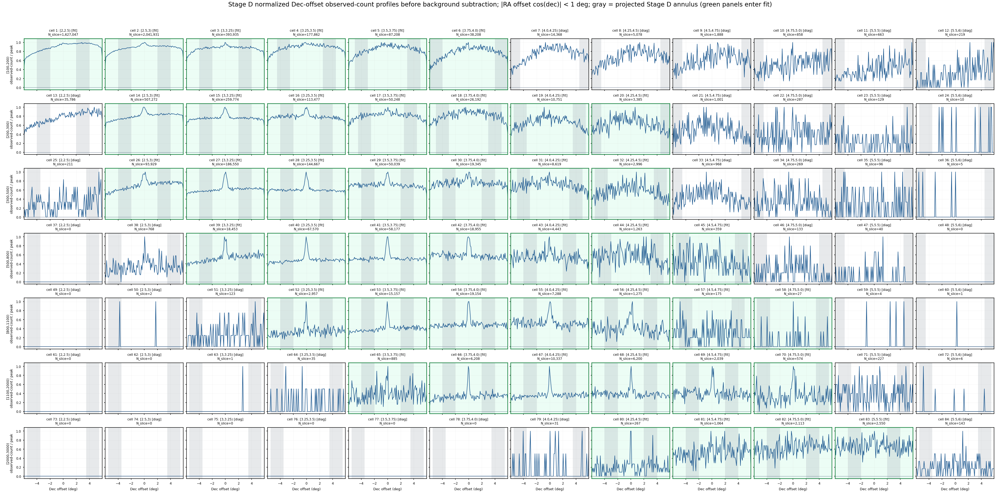
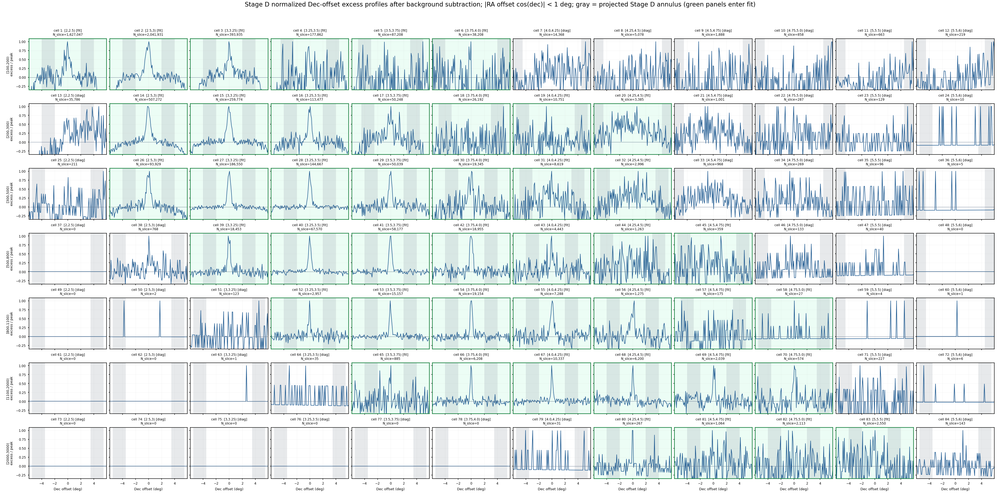
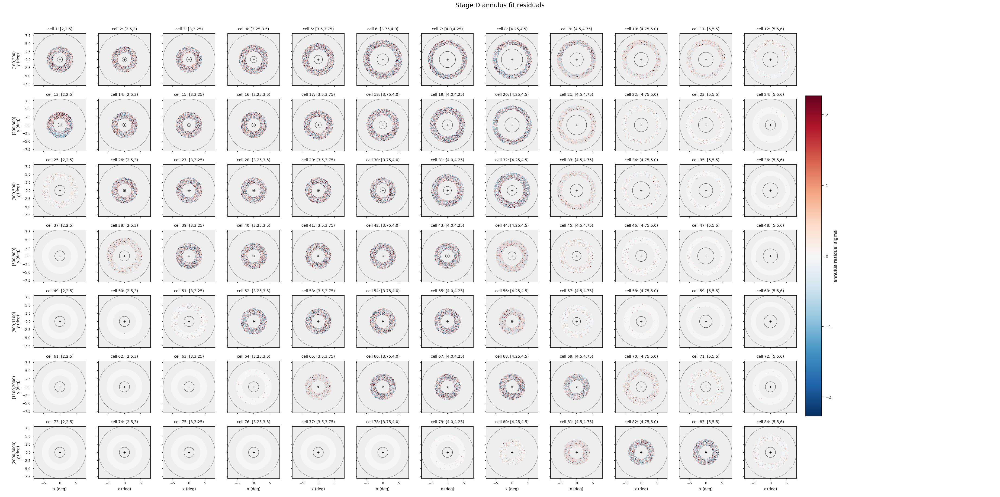
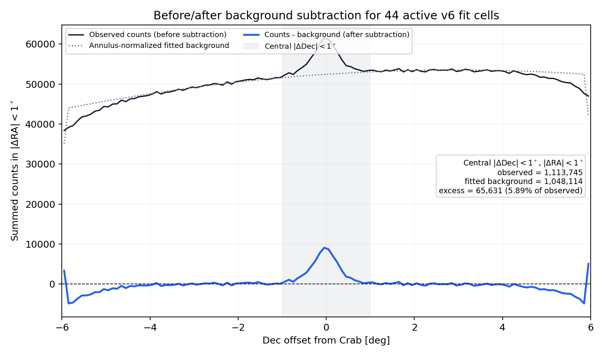
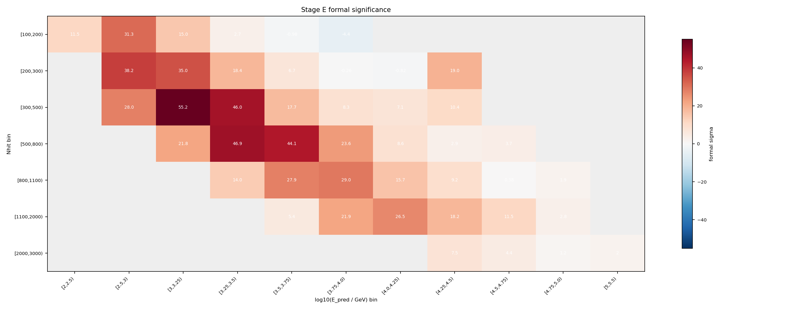
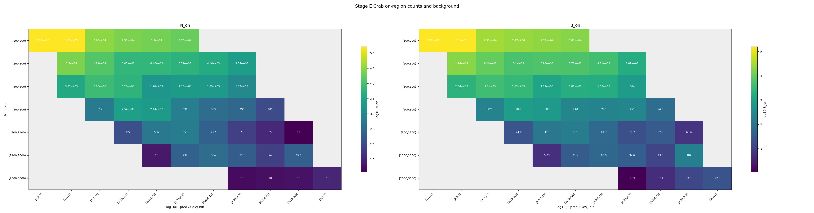
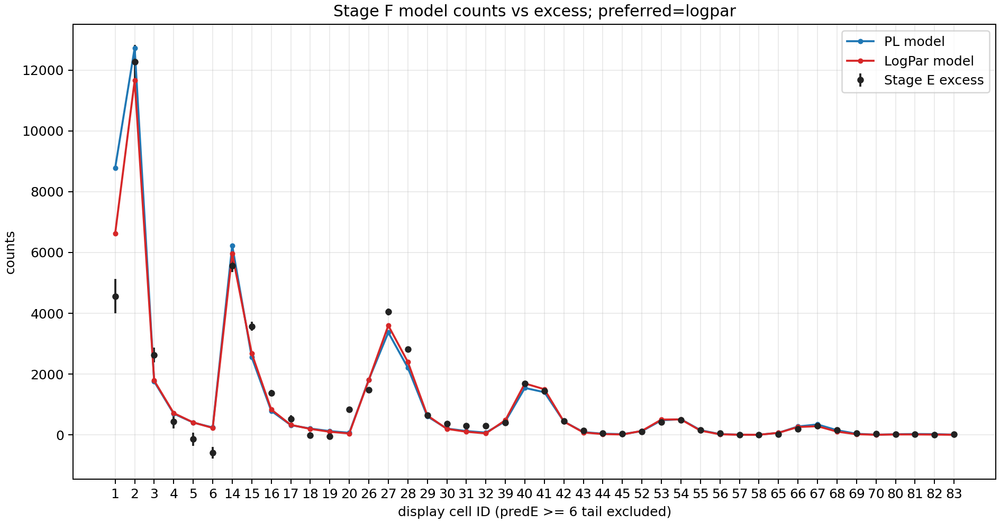
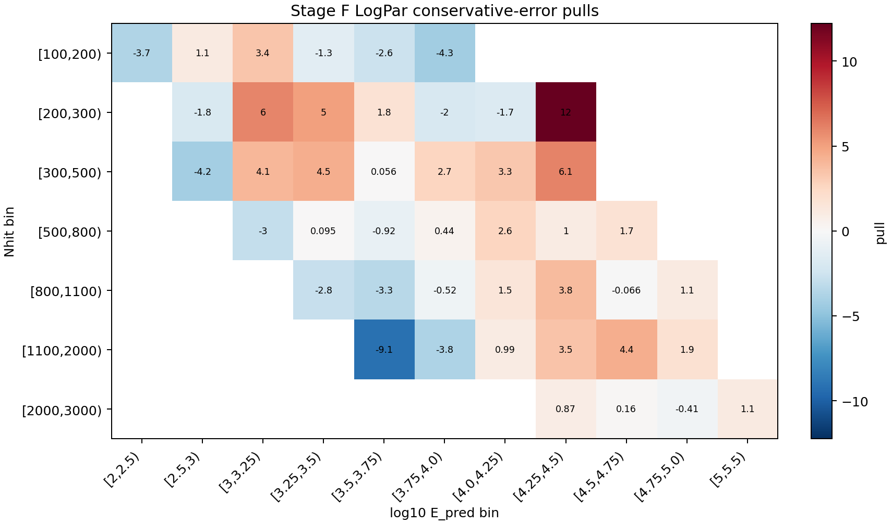
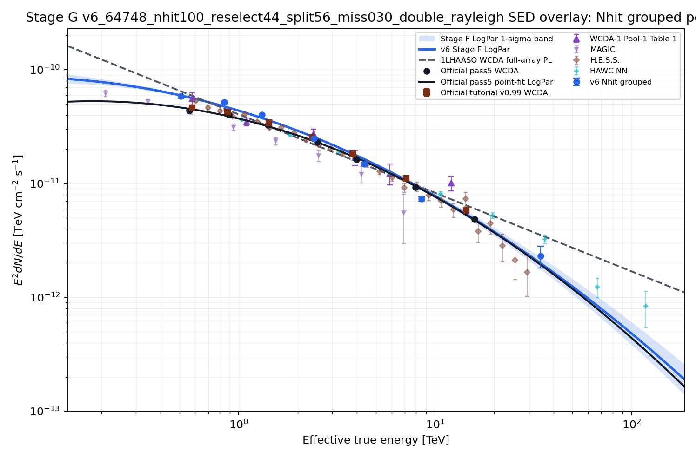
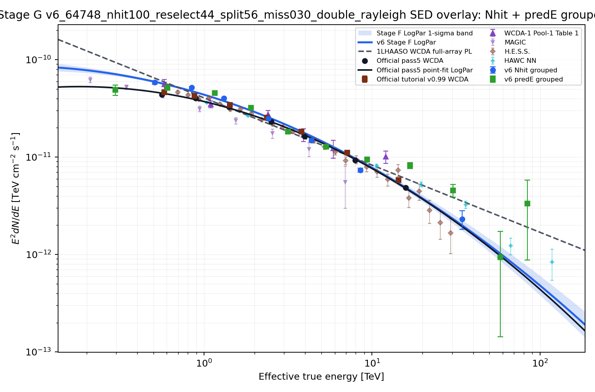
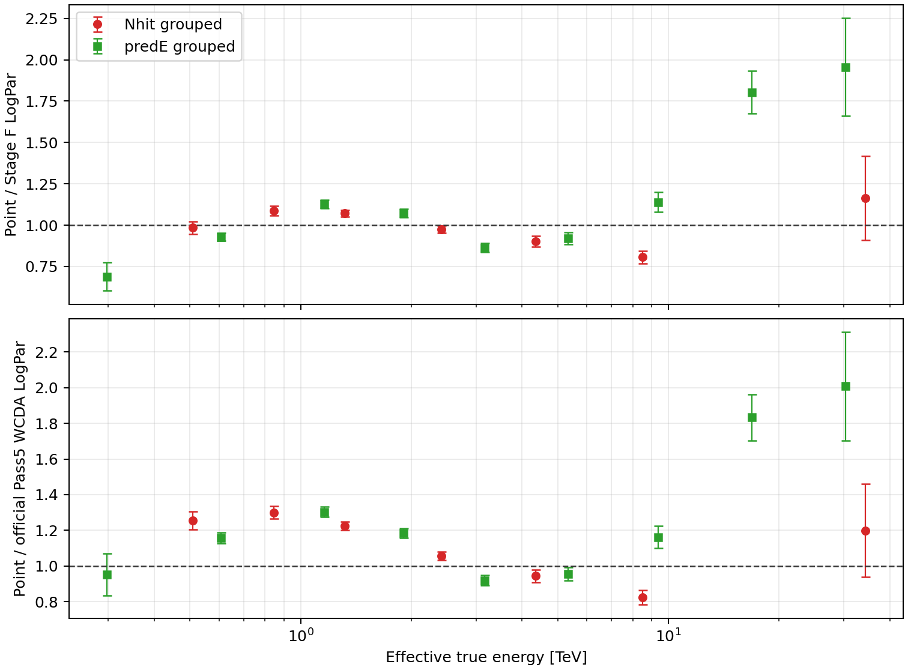
Stage F Fit
Stage F uses the frozen final selector and Scheme R - Double-Rayleigh PSF with Poisson-Pooled Background. Stage B uses the double-Rayleigh PSF with F(r_opt)=0.7129790300890827. Stage D uses the frozen positive Poisson-pooled surface and analytic circular B_on. Stage E containment is 1; Stage F/G use Aeff_R=0.7129790300890827*Aeff_nominal exactly once. The preferred model recorded by Stage F is logpar.
| Fit | Valid | chi2/ndof | p | phi0 | gamma/alpha | beta |
|---|---|---|---|---|---|---|
| PL conservative | True | 652.2/42 | 1.893e-110 | 2.2453e-12 | 2.645 | n/a |
| LogPar conservative | True | 578.4/41 | 4.922e-96 | 2.4359e-12 | 2.739 | 0.09976 |
| PL sqrt-N | True | 1048/42 | 2.948e-192 | 2.2780e-12 | 2.627 | n/a |
| LogPar sqrt-N | True | 908.7/41 | 5.938e-164 | 2.4883e-12 | 2.746 | 0.1145 |
Stage G SED
Stage G freezes the preferred Stage F spectrum with phi0=2.4359e-12, alpha=2.739, beta=0.09976 at 3 TeV. Quality status: passed.
| Nhit group | Cells | E_eff TeV | E2 dN/dE | Err | chi2/ndof |
|---|---|---|---|---|---|
[100,200) | 1;2;3;4;5;6 | 0.5081 | 5.8516e-11 | 2.351e-12 | 52.64/5 |
[200,300) | 15;16;17;18;19;20;21 | 0.8459 | 5.1709e-11 | 1.376e-12 | 215.2/6 |
[300,500) | 28;29;30;31;32;33;34 | 1.317 | 4.0353e-11 | 7.704e-13 | 96.5/6 |
[500,800) | 42;43;44;45;46;47;48 | 2.417 | 2.4934e-11 | 5.545e-13 | 19.19/6 |
[800,1100) | 56;57;58;59;60;61;62 | 4.35 | 1.4821e-11 | 5.521e-13 | 28.72/6 |
[1100,2000) | 70;71;72;73;74;75 | 8.506 | 7.3406e-12 | 3.597e-13 | 108.7/5 |
[2000,3000) | 86;87;88;89 | 34.36 | 2.3236e-12 | 5.070e-13 | 1.752/3 |
| PredE group | Cells | E_eff TeV | E2 dN/dE | Err | chi2/ndof |
|---|---|---|---|---|---|
[2,2.5) | 1 | 0.2971 | 4.8952e-11 | 6.048e-12 | 0/0 |
[2.5,3) | 2;15;28 | 0.6068 | 5.1425e-11 | 1.318e-12 | 13.19/2 |
[3,3.25) | 3;16;29;42 | 1.161 | 4.5518e-11 | 9.824e-13 | 45.48/3 |
[3.25,3.5) | 4;17;30;43;56 | 1.904 | 3.2222e-11 | 7.297e-13 | 45.56/4 |
[3.5,3.75) | 5;18;31;44;57;70 | 3.159 | 1.8216e-11 | 5.473e-13 | 77.23/5 |
[3.75,4.0) | 6;19;32;45;58;71 | 5.332 | 1.2759e-11 | 4.956e-13 | 39.02/5 |
[4.0,4.25) | 20;33;46;59;72 | 9.363 | 9.4647e-12 | 5.077e-13 | 18.48/4 |
[4.25,4.5) | 21;34;47;60;73;86 | 16.86 | 8.2023e-12 | 5.839e-13 | 175.6/5 |
[4.5,4.75) | 48;61;74;87 | 30.3 | 4.5538e-12 | 6.896e-13 | 12.19/3 |
[4.75,5.0) | 62;75;88 | 58.22 | 9.3782e-13 | 7.943e-13 | 4.745/2 |
[5,5.5) | 89 | 84.14 | 3.3508e-12 | 2.473e-12 | 0/0 |
Metadata Audit
Main-input metadata files were scanned for legacy cache/model path tokens. Status: passed.
Final v6 Fit Parameters
The preferred conservative-error fit is logpar at pivot energy 3 TeV, using dN/dE = phi0 * (E/E0)^[-alpha - beta * ln(E/E0)].
| Parameter | Best fit +/- 1 sigma | Unit |
|---|---|---|
phi0 | 2.4359235e-12 ± 3.854227e-14 | TeV^-1 cm^-2 s^-1 |
alpha | 2.739049 ± 0.0207008 | dimensionless |
beta | 0.09975702 ± 0.014324 | dimensionless |
| Metric | Value |
|---|---|
| Fit valid | True |
| chi2 | 578.4027 |
| ndof | 41 |
| chi2/ndof | 14.10738 |
| p-value | 4.922118e-96 |
| Delta chi2 (PL - LogPar) | 73.83528 |
| Physical flux status | ok |
ok, but chi2/ndof=14.107 and p=4.9221e-96 indicate poor global goodness of fit.